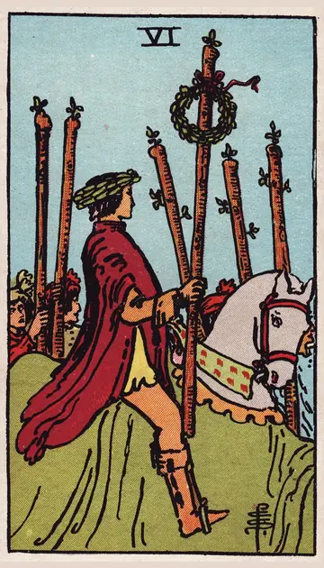

正位置ワンドの6の正位置
キーワード：成功・評価・自信
恋愛
自信を持って、思いを伝えられる時です。
相手の気持ちあなたのことを、誇らしく魅力的だと感じているようです。
この先想いが実り、うれしい展開がありそうです。
アドバイス自信を持って、自分から一歩踏み出しましょう。
気をつけること得意になりすぎて、相手の気持ちを見落とさないように。
この先想いが実り、うれしい展開がありそうです。
アドバイス自信を持って、自分から一歩踏み出しましょう。
気をつけること得意になりすぎて、相手の気持ちを見落とさないように。
人間関係
周りから認められ、人気が高まる時です。
相手の気持ちあなたに一目置いているようです。
この先信頼が高まり、頼られる場面が増えそうです。
アドバイス周りの応援を、素直に受け取りましょう。
気をつけること注目されても、謙虚さを忘れないように。
この先信頼が高まり、頼られる場面が増えそうです。
アドバイス周りの応援を、素直に受け取りましょう。
気をつけること注目されても、謙虚さを忘れないように。
仕事・学業
成果が評価され、注目を集める時期です。
この先大きな評価や、立場の向上につながりそうです。
アドバイス成果をきちんと伝え、次の目標に生かしましょう。
気をつけること成功に油断して、次の準備を怠らないように。
アドバイス成果をきちんと伝え、次の目標に生かしましょう。
気をつけること成功に油断して、次の準備を怠らないように。
お金
頑張りが、お金として評価されやすい時です。
この先うれしい臨時収入がありそうです。
アドバイス成果を、きちんと伝えましょう。
気をつけること入ったお金で、気が大きくならないように。
アドバイス成果を、きちんと伝えましょう。
気をつけること入ったお金で、気が大きくならないように。
生活
暮らしの工夫が、うまくいく時です。
この先暮らしの満足度が上がりそうです。
アドバイスうまくいったやり方を、続けましょう。
気をつけること得意になって、無理を重ねないように。
アドバイスうまくいったやり方を、続けましょう。
気をつけること得意になって、無理を重ねないように。
今日の運勢
うれしい知らせや、ほめられることがありそうな日です。
この先うれしい結果が届きそうです。
アドバイス自分をほめて、自信を育てましょう。
気をつけること調子に乗って、約束を増やしすぎないように。
アドバイス自分をほめて、自信を育てましょう。
気をつけること調子に乗って、約束を増やしすぎないように。
逆位置ワンドの6の逆位置
キーワード：評価への不安・慢心・自信のゆらぎ
恋愛
自信が持てず、気持ちを伝えにくい時です。
相手の気持ちあなたにどう思われているか、気にしているようです。
この先自信を取り戻せば、関係も前に進みそうです。
アドバイス人と比べず、自分の良さを見つめ直しましょう。
気をつけること評価を気にして、無理をしすぎないように。
この先自信を取り戻せば、関係も前に進みそうです。
アドバイス人と比べず、自分の良さを見つめ直しましょう。
気をつけること評価を気にして、無理をしすぎないように。
人間関係
周りの評価が、気になりやすい時です。
相手の気持ちあなたの前で、良く見られたいと感じているようです。
この先誠実に続ければ、自然と認められそうです。
アドバイス評価より、自分が大切にしたいことを優先しましょう。
気をつけること見栄を張りすぎないように。
この先誠実に続ければ、自然と認められそうです。
アドバイス評価より、自分が大切にしたいことを優先しましょう。
気をつけること見栄を張りすぎないように。
仕事・学業
思ったほど評価されず、がっかりしやすい時期です。
この先努力を続ければ、次は評価されそうです。
アドバイス結果だけでなく、過程で得たものにも目を向けましょう。
気をつけること手柄を焦って、周りとの関係を崩さないように。
アドバイス結果だけでなく、過程で得たものにも目を向けましょう。
気をつけること手柄を焦って、周りとの関係を崩さないように。
お金
期待したほど、収入が増えない時です。
この先続けていれば、成果が出そうです。
アドバイス今ある収入の中で、工夫しましょう。
気をつけること見栄での出費に気をつけて。
アドバイス今ある収入の中で、工夫しましょう。
気をつけること見栄での出費に気をつけて。
生活
思ったほど、暮らしが整わない時です。
この先少しずつ整っていきそうです。
アドバイス小さな成果を、認めてあげましょう。
気をつけること人の暮らしと比べないように。
アドバイス小さな成果を、認めてあげましょう。
気をつけること人の暮らしと比べないように。
今日の運勢
期待どおりにいかない日です。
この先明日は、今日より前向きになれそうです。
アドバイス小さな成功を積み重ねましょう。
気をつけること人の評価に一喜一憂しすぎないように。
アドバイス小さな成功を積み重ねましょう。
気をつけること人の評価に一喜一憂しすぎないように。
このページの文章は、アプリ「ひとやすみタロット」の結果に使っている文章です。アプリでは、あなたの相談や、カードが出た位置（今の状況・これからの流れ・アドバイス）に合わせて、この中から文章を選びます。逆位置の読み方は逆位置のことをご覧ください。
「ワンドの6」が出たら、あなたの相談ではどう読む？
アプリでは、質問への答えに合わせて、カードの言葉をあなたの相談に合わせて届けます。
Android 対応・会員登録なし